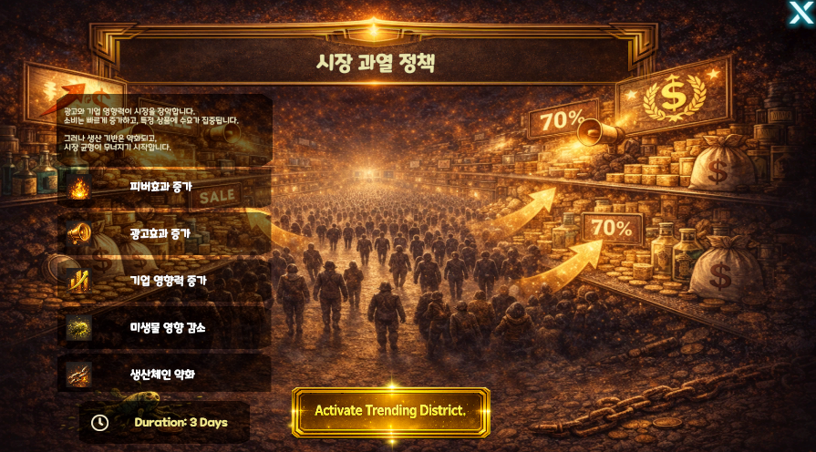
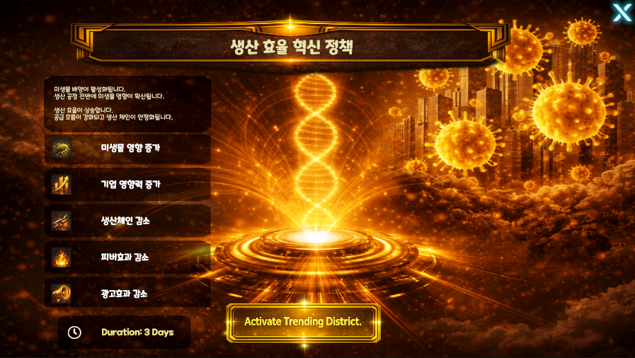
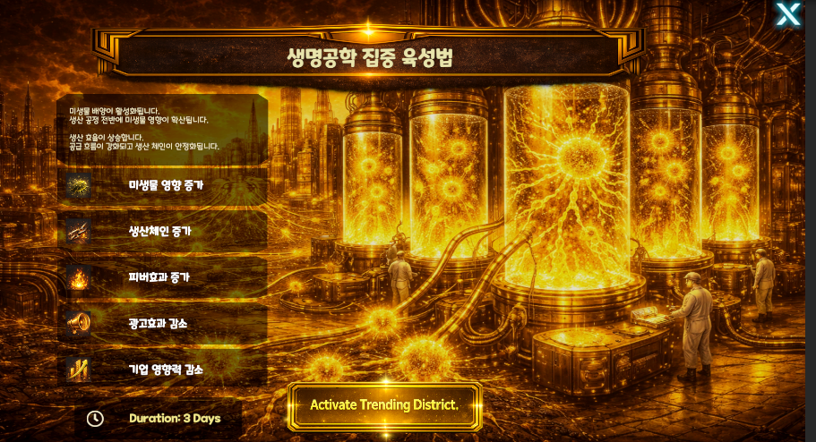

Core System
사회정책
핵심 효과 설명
피버효과
이벤트, 유행, 일시적 수요 폭증처럼 짧은 기간 동안 발생하는 효과를 증폭시킨다.
광고효과
광고, 판촉, 상품 노출로 발생하는 효과를 증폭시킨다.
기업 영향력
회사가 시장, 계약, 소비자, 정책에 미치는 효과를 증폭시킨다.
미생물 영향
미생물이 생산, 상품, 지역 환경, 소비자 행동에 미치는 효과를 증폭시킨다.
생산체인
1단계부터 7단계까지 이어지는 세트 상품을 순서대로 연속 판매했을 때 발생하는 가격 상승 효과를 증폭시킨다. 생산체인 수치가 높을수록 연속 판매 보너스가 커지고, 중간 단계가 끊기면 누적 가격 상승 효과가 초기화되거나 감소한다.
진입 경로
홈
→ 코어 시스템
→ 사회정책사회정책 메뉴에서는 적용 가능한 정책과 현재 시행 중인 정책을 확인한다.
기본 구조
사회정책은 시장과 산업 전체의 규칙을 일정 기간 변경하는 시스템이다.
각 정책은 다음 다섯 가지 효과에 영향을 준다.
피버효과
광고효과
기업 영향력
미생물 영향
생산체인모든 정책은 이점과 불이익을 함께 가지며, 기본 지속 기간은 3일이다.
시장 과열 정책

강한 기업 영향력이 시장을 장악한다. 소비가 빠르게 증가하고 특정 상품에 수요가 집중되지만, 지나친 시장 과열로 생산과 공급 구조가 불안정해진다.
효과
- 피버효과 증가
- 광고효과 증가
- 기업 영향력 증가
- 미생물 영향 감소
- 생산체인 약화
지속 기간
3일
대기업 우대 정책
광고와 자본이 대기업에 집중된다. 대형 기업의 영향력이 빠르게 확대되지만, 중소기업과 분산된 생산 구조는 약해질 수 있다.
효과
지속 기간
3일
생산 효율 혁신 정책

미생물 배양이 활성화되고 생산 공정 전반에 미생물 영향이 확산된다. 생산 효율은 상승하지만 소비 자극과 광고 효과는 감소한다.
효과
지속 기간
3일
이미지의 생산체인 감소는 생산 효율 감소가 아니라 생산시간 감소를 뜻하는 것으로 정리한다.
생명공학 집중 육성법

미생물 배양과 생명공학 산업을 집중적으로 육성한다. 생산성과 미생물 활용도는 증가하지만 광고효과와 일반 기업 영향력은 감소한다.
효과
지속 기간
3일
지역 독점 납품 계약
특정 지역의 공급망을 하나의 회사나 상품군에 집중한다. 해당 지역에서 안정적인 공급과 판매를 확보하지만 시장 경쟁과 외부 기업의 영향력은 줄어든다.
효과
지속 기간
3일
정책 적용 흐름
사회정책 선택
→ 효과 확인
→ 정책 활성화
→ 3일 동안 시장과 생산에 적용
→ 정책 종료메뉴 설명
사회정책
시장과 산업 전체에 적용할 정책을 선택합니다. 정책에 따라 피버효과, 광고효과, 기업 영향력, 미생물 영향, 생산체인이 3일 동안 변화합니다.